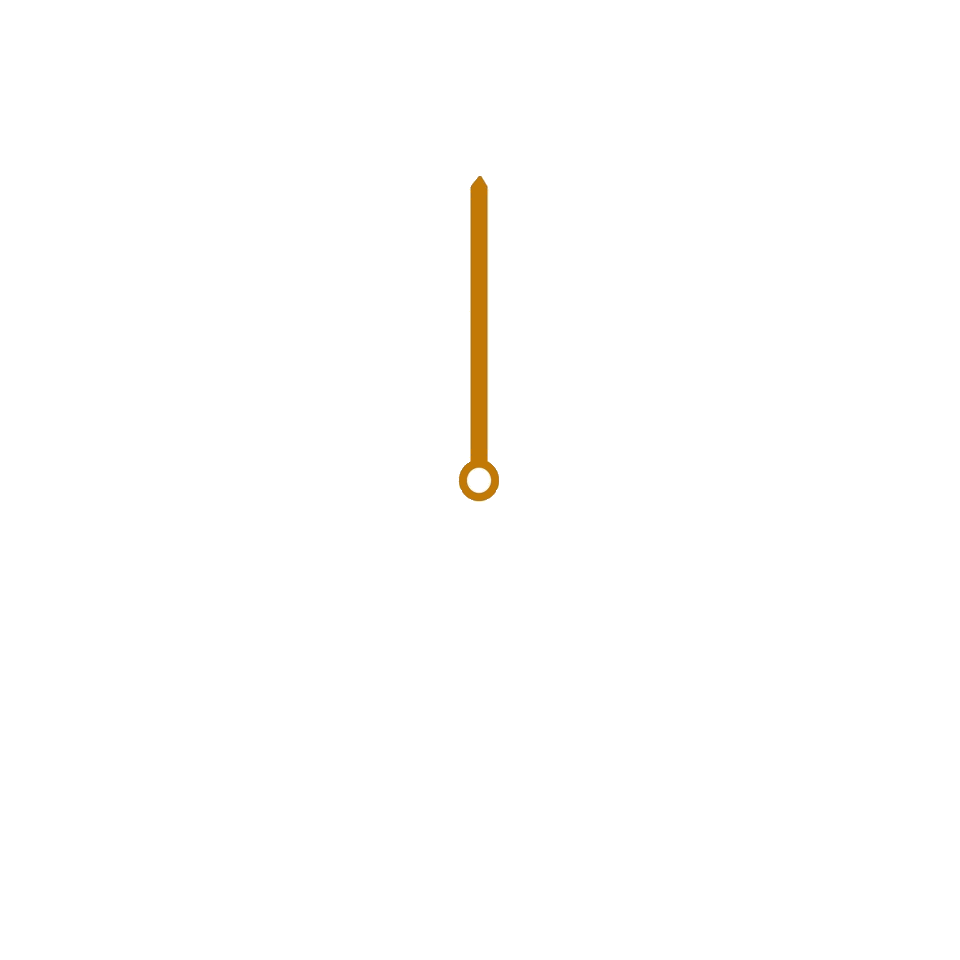

<!DOCTYPE html>
<html lang="ja">
<head>
    <meta charset="UTF-8">
    <meta name="viewport" content="width=device-width, initial-scale=1.0">
    <title>時計</title>
    <link rel="stylesheet" href="css/style.css">
    <!-- <link rel="stylesheet" href="css/analog.css"> -->
</head>
<body>
    <div id="clock">
        <p class="text"></p>
        <div class="image">
            
            
            
            
            
            
            
            
        </div>
        <!-- 授業作アナログ時計-->
         <!-- <div id="clock_face"></div>
            
            
            
            
        </div> -->


    <!-- アナログ時計用の要素(自作)-->
    <div class="analogClock" id="base">
        <div></div>
        <div></div>
        <div></div>
        <div></div>   
    </div>

    <script src="Clock.js"></script>
    <script src="ImageClock.js"></script>
    <!-- 自作-->
    <script src="analogImageClock.js"></script>

    <!--授業アナログ時計-->
    <!-- <script src="AnalogClock.js"></script> -->
<script>
// 時計を表示し実行する
//      Clockクラスは"#clock"内に時計を表示する
// ↓授業のimgが変わる時計
// const clock = new ImageClock("clock")

// 授業アナログ時計クラス
// const clock = new AnalogClock("clock")

// ↓自作アナログ時計用クラス
const clock = new jisakuAnalogclock("base")

//      startメソッドで動作を開始する
//      intervalを使い時間を更新する
clock.start()
// clock.stop() 時計を停止する
</script>
</body>
</html>